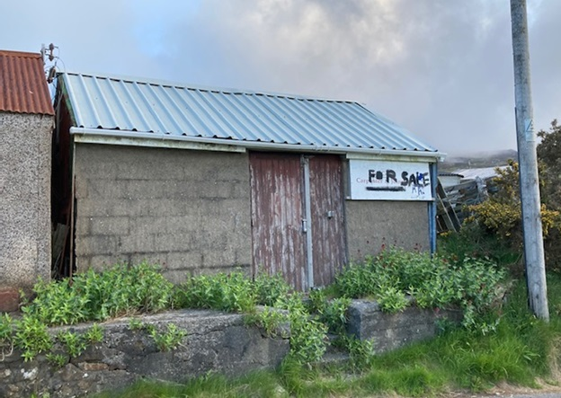

La chirurgie
Pendant bien des années, cette cabane en zinc servait de chirurgie. En ce qui concernait les consultations médicales il n’y avait point des secrets à Llithfaen, car de la salle d’attente ou même de la friterie d’à côté on entendait tout!
The surgery building in 2021